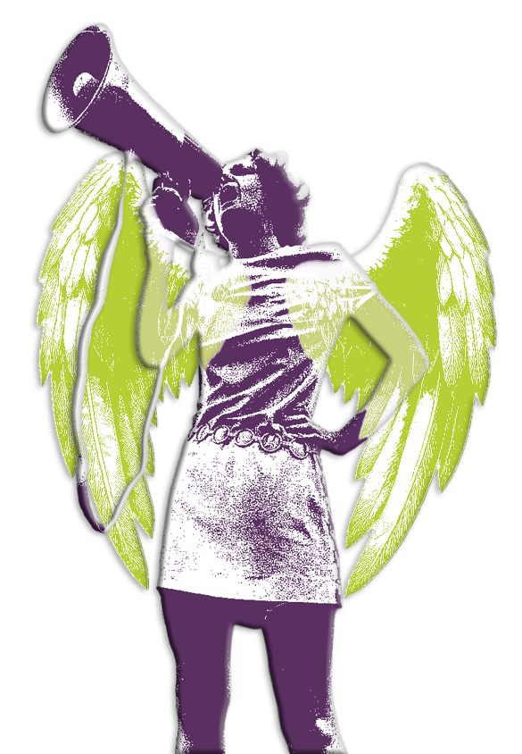
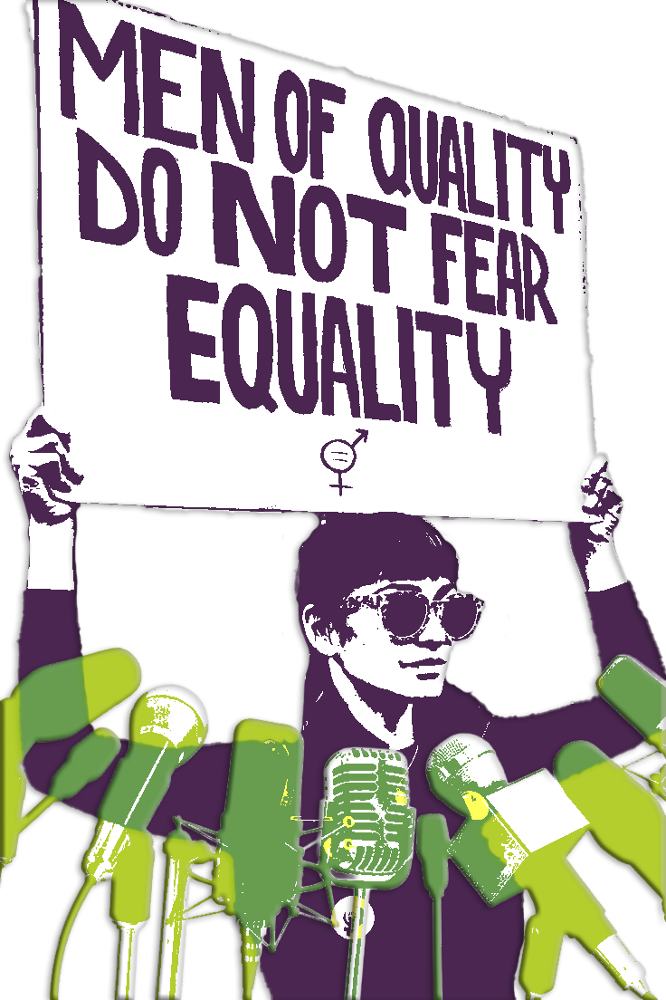
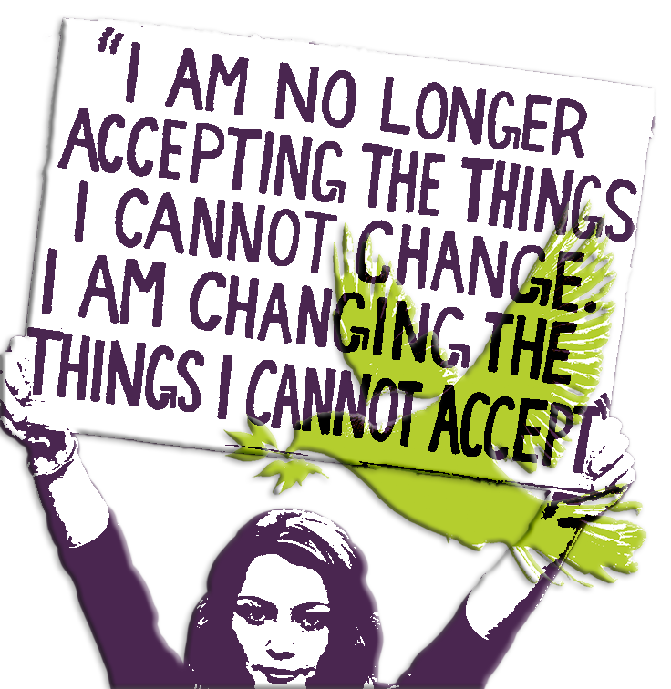

-
Feminism... why should I care?
-
The Predicament
There we are, back at a crossroad we passed almost two decades ago. The debate of whether women deserve this right or that freedom, is once again blooming and this time it is back with a bigger threat to women and our freedom than before.
Highlighting the danger of forgetting the fight for feminism, is one of the most crucial things we can do, in order for us to make sure that history will not repeat itself.
Now it seems to be more acceptable to tell girls and women to cycle in groups to avoid attacks, than to tackle the problem and stop the perpetrators. A problem woman didn’t create but are forced to solve.
In contrary to the general belief, feminism isn’t hate against the male gender. It is quite the opposite. Feminism is not rooted in hate but in the believe that all people should have the same rights. We don’t want a special treatment, but we want to be treated the same. We want human rights. The right to go to school, not fear for our safety, have autonomy over our own bodies, be represented in politics and have the same economic and social rights as any man.

A protesting woman holding a megaphone. In a different colour she has angel wings. -

A protesting woman holding a sign that says "Men of quality do not fear equality". In a different colour there are 7 microphones surrounding her. The Contruction
While the word feminism comes from the Latin word femina, meaning “woman”, being a feminist isn’t only for women. Feminism is the believe that all people, no matter their belief, background, sexual orientation, disabilities or spectrum, should have the same rights and representation in our society.
As I said before this inequality isn’t only affecting women, it affects everyone. An example could mean that there is less financial support for working mothers. The result could lead to more stress and a cut in hours to take care of their children. Which in turn leads to shortage in the job market that has to be fill by yet another person. Someone needs to do the work, but if it costs more for women to keep working, financially or mentally, there is a problem that affects us all.
This assumes the women is the main caregiver of the children of course, yet another example of invisible unpaid labour, but I digress.
-
The Solution
In today’s world where the turning back to “traditional” rolls is more comfortable, than continuing the fight towards justice, the fragility of our education system is being tested. Due to the influence of the internet and mainly social media, the acceptance and push towards this “traditional” lifestyle is widely broadcasted with an enormous reach. With this push a lot education of what feminism actually stands for is misunderstood or lost.
In this instance what we could be doing is keep the momentum of this discussion going. We could be the voice that feminism needs and advocate, not just for women but for a powerful and inclusive society. Something that will benefit us all. We can teach the next generation the importance of knowing the history of this strong movement.
I’ve gathered a few sources where there is much more information to be found on the subject and what else we can do to empower and protect the next generation. And not only that you can also find the history of the feminist movement right here on this website.
This might be just another voice urging you on to start caring now. But this might be push that we need as a society. The urgency is increasing as the safety of women is at serious risk. We must draw a hard line, as this is a snowball effect. Once women’s rights are up for debate again, the sky is the limit, and nobody’s rights will be safe. So be the voice that protects us all.

A protesting women holding a sign thats says “I am no longer accepting the things I cannot change. I am changing the things I cannot accept.” In another colour with a light opacity a dove is flying over her sign. - Next page